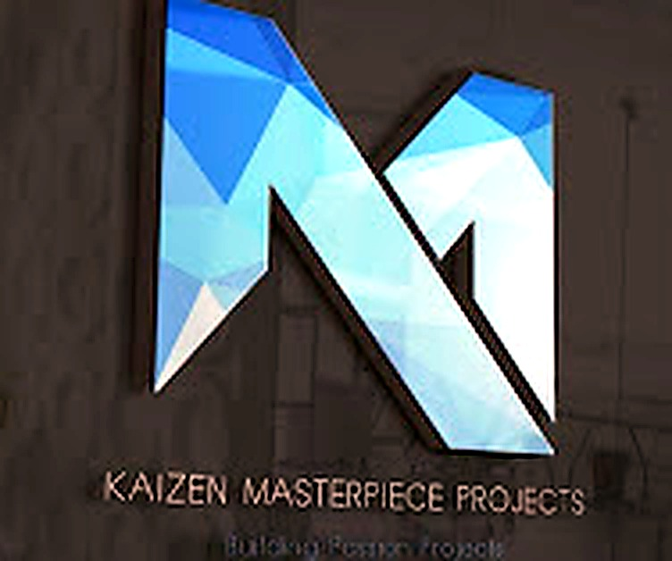
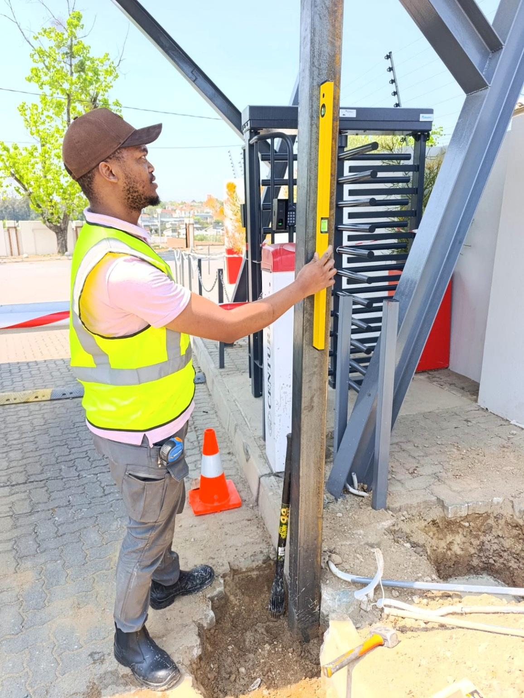
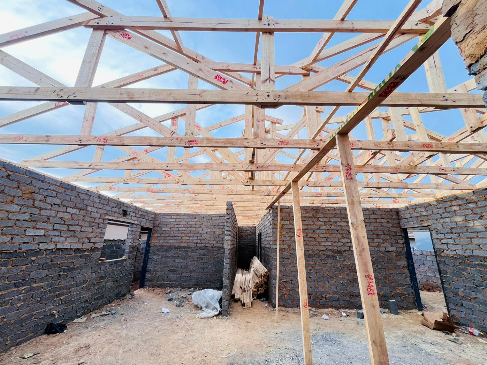
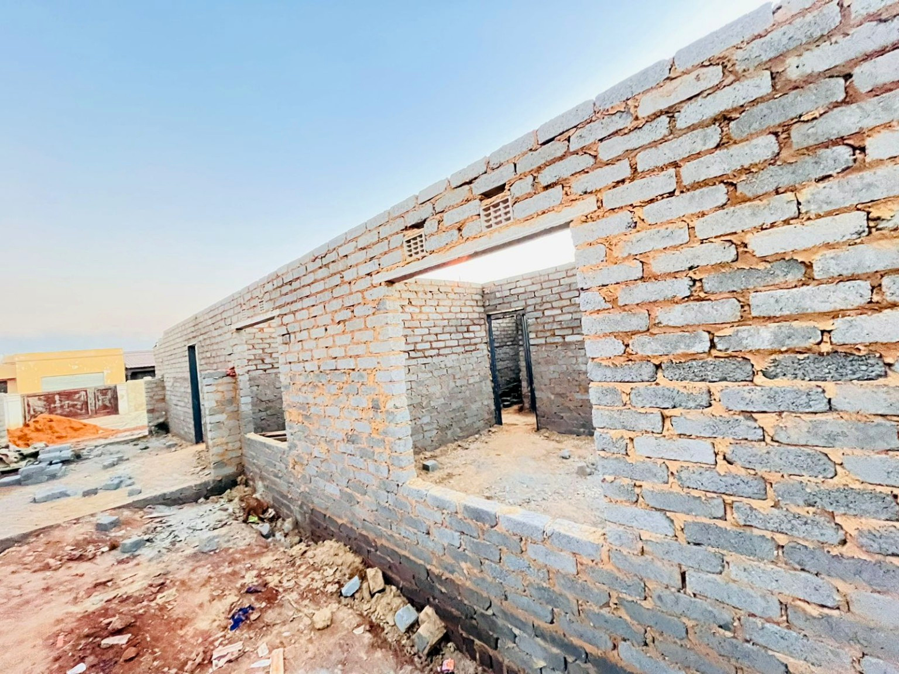
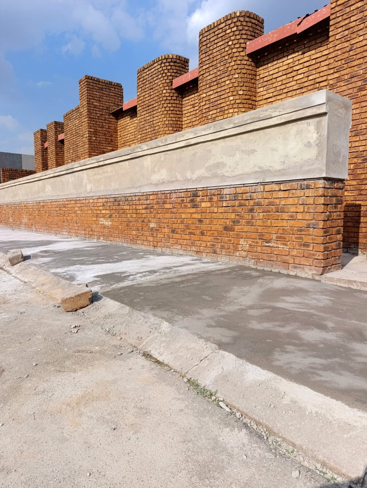
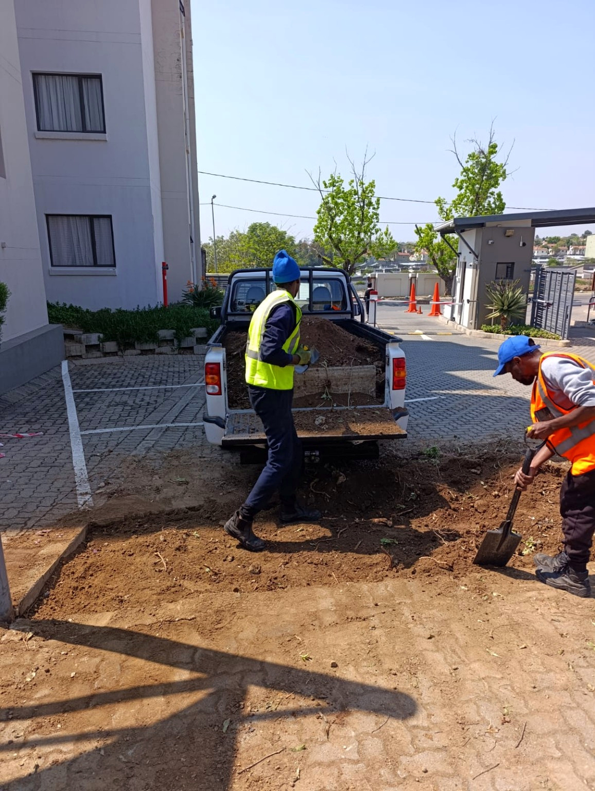
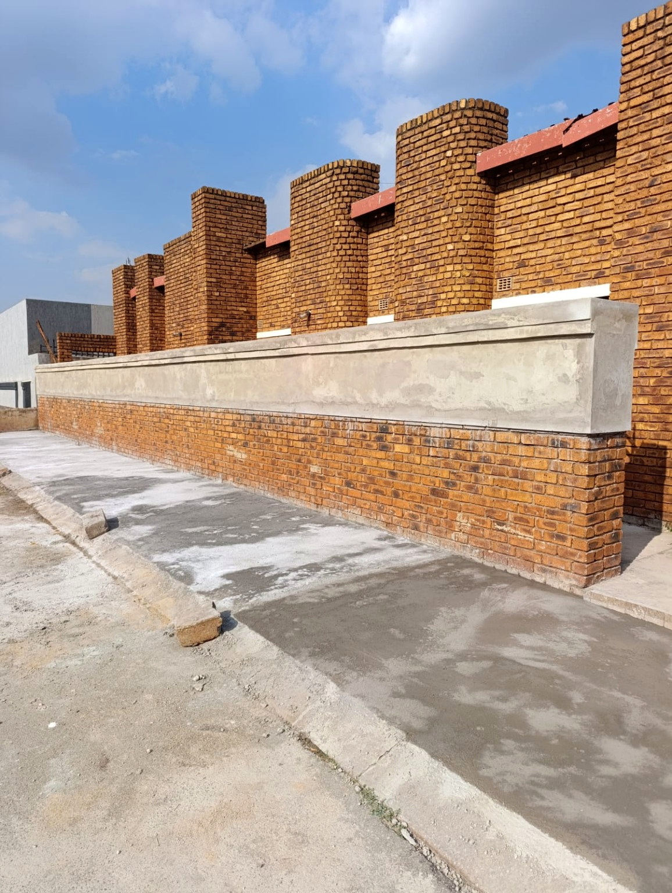
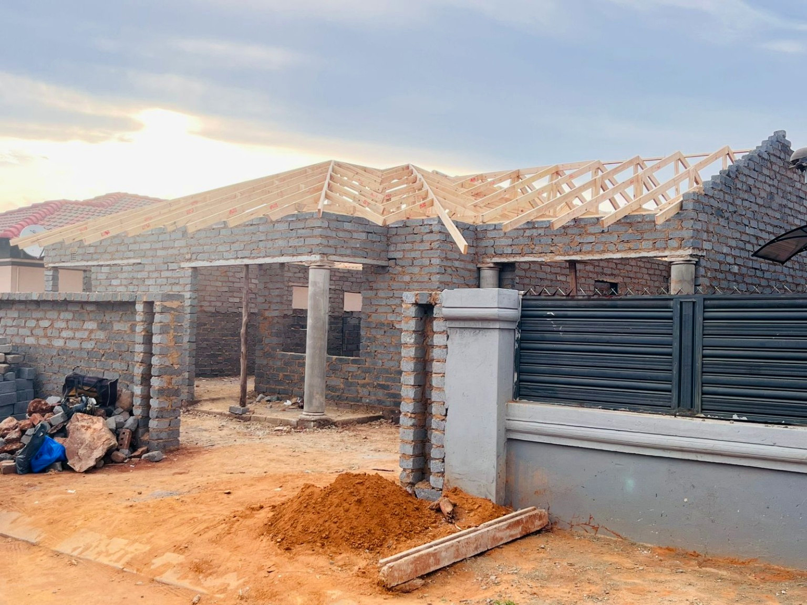
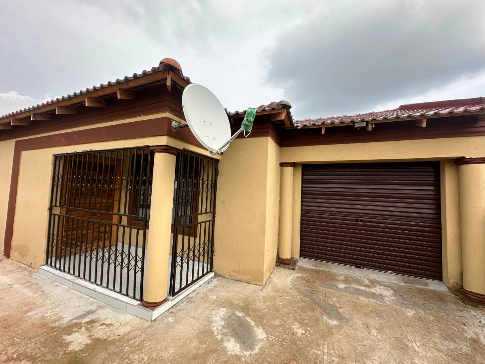
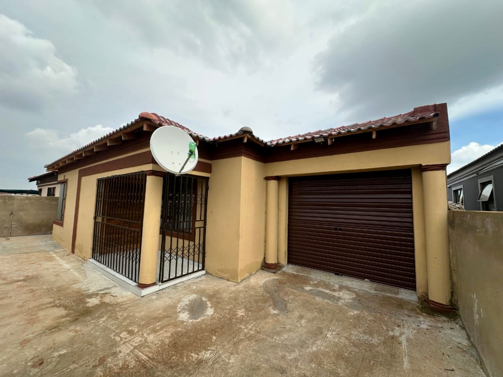

General
Construction
Practical building support for new work and existing spaces.
- General building works
- Renovations & refurbishments
- Maintenance & repairs

KAIZENMASTERPIECE PROJECTSCONSTRUCTION THAT MOVES YOU FORWARD
Reliable construction support. Quality workmanship. A growing South African team ready to help bring your next project to life.

ON SITE / 01A PRACTICAL PARTNER ON SITE
Kaizen Masterpiece Projects (Pty) Ltd is a construction company established in 2020 with a focus on quality construction services and sustainable growth in the South African construction industry.
We have primarily operated as a subcontractor, contributing to projects across Gauteng and working alongside established main contractors in structured project environments. Each project helps strengthen our practical experience, delivery discipline and ability to take on greater responsibility.
Our direction is clear: keep delivering reliable workmanship while growing into a fully independent main contractor.
CAPABILITY IN ACTION
Flexible construction support for residential, commercial and institutional projects — delivered with coordination, care and an eye on the specification.
Practical building support for new work and existing spaces.
Core site work to help keep construction moving.
Careful finishing that helps a project feel complete.
Additional capacity and coordination on active sites.
A STRONG FOUNDATION
We understand that work on a live site depends on communication, timing, coordination and respect for the agreed specification. Our approach is built around those fundamentals.
REAL WORK. REAL SITES.
Construction photographs supplied for the Kaizen Masterpiece Projects website. Images are displayed as supplied, with light image optimisation for the web.





WORK THAT BUILDS EXPERIENCE
Selected project experience from our subcontracting portfolio, as described in the company profile.

01 / RESIDENTIALRole: Subcontractor
Scope: Plastering and finishing works, including high-volume plastering across project phases.

02 / BUILDINGRole: Subcontractor
Scope: Structural and finishing support, general building works and finishing.

03 / HOUSINGRole: Subcontractor
Scope: Bricklaying and general site works supporting residential construction.
The supplied photographs are presented as company-provided project imagery; specific image-to-project attribution has not been independently confirmed.
THE KAIZEN STANDARD
SAFETY. QUALITY. RESPECT.
We are committed to safe, compliant and environmentally responsible construction practices.
Appropriate personal protective equipment, adherence to site safety regulations and safe working procedures.
Work aligned with project specifications, with a focus on consistent execution and continuous improvement.
We aim to work in line with project specifications and continuously improve our execution and site practices.
WHERE WE'RE HEADED
Kaizen Masterpiece Projects is actively building toward greater independence and broader project responsibility.
Future outlook: tender for independent projects, manage full construction lifecycles and deliver turnkey construction solutions.
MEET THE TEAM
A growing team with practical industry experience and a shared commitment to dependable workmanship.
Operations Director
Managing Director
Project Director
The company profile also names Thulani among the founders, while the team list names Dulang Qina as Project Director. Please confirm the preferred founder/team naming before final publication.
WHY WORK WITH US
INDUSTRY REFERENCES
Reference details below are reproduced from the supplied company profile. Please obtain permission before publishing individual contact numbers publicly.
Subcontracting work across multiple projects.
Ad hoc work including painting, ceiling and tile installation.
The profile also contains the names “Taylor Alonso” and “Timmerman Industries” without a clear explanation of their roles. They have not been presented as clients or partners here.
LET'S TALK ABOUT YOUR NEXT PROJECT
Tell us what you need. Share your project type, location and timing, and our team can follow up to discuss the next steps.